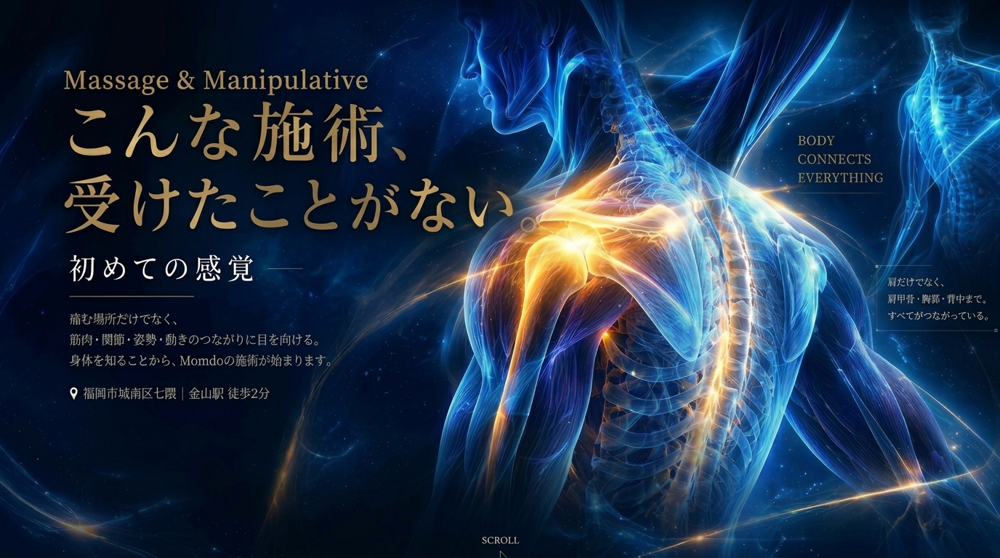

01
マンツーマンの完全オーダーメイド施術
細かな変化は、毎回同じ施術者が担当するからこそ気づけるポイントです。。

気になる症状からでも、身体の構造からでも。あなたの知りたいところから始められます。
痛む場所だけでなく、身体全体のつながりに目を向ける。 それがMomdoの施術です。
細かな変化は、毎回同じ施術者が担当するからこそ気づけるポイントです。。
筋肉・関節・神経などの仕組みを踏まえ、一人ひとりの状態に合わせて施術します。
「届いてほしい場所に深く届く」これまでにない感覚を体感いただけます。
福岡市城南区七隈。地下鉄七隈線「金山駅」1番出口から徒歩約2分です。
気になる症状や施術について、まずはお気軽にご相談ください。
アクセスやご来店の流れは専用ページでご案内しています。
肩だけでなく、肩甲骨や胸郭の動きにも目を向けてみましょう。
足首の機能を知ることは、歩行を理解する入口のひとつです。
スタッフの実際の経験や人柄を取材し、事実確認をしてから掲載します。